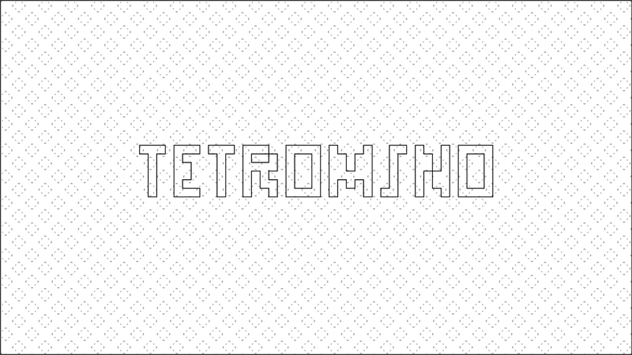

NIKITA PERMINOV
NikFroly@gmail.com
THE PATH IN GAME DEVELOPMENT
EXPERIENCE
Modding
Before creating something, you first have to dismantle something similar.
I'm very glad that I was able to seize the moment when games could be easily modified. I'm very grateful to the developers who create internal editing tools. Thanks to them, many people can take a peek at the complex world of game development. I was one of them.
My greatest personal achievement in modding was creating my own map for Counter-Strike. It implemented four ideas I had figured out along the way: variety, verticality, asymmetry, and lots of snow. To sum it up, I was drawn to challenging tasks from the start.
Scratch
My first proper introduction to programming was Scratch. After playing around and testing various mechanics in the toolset, I quickly realized that at first I should try recreating a small existing game. Perhaps that was the previous experience talking.
As a result, I managed to implement the game Pong. But then my ideas had reached the limits of the toolset, which led me to the following...
Web
With the arrival of the local network, I began exploring the opportunities it offered, particularly JavaScript. The browser, which I had previously launched only once, turned into my personal playground. Before I knew it I was assisting other enthusiasts in the creation of game servers, forums, websites etc.
When the global network had become available for me, it consumed my life even more. However, I never forgot about the game development either.
My game engine
For my bachelor's degree, I wrote a small game engine in C++ using SDL. The goal of this project was to convey two messages: the gaming industry is here to stay and it needs qualified professionals, and the choice of tools must be reasonable.
The first point would now seem laughable to most people, as it's so obvious. But, unfortunately, that was not always the case. The litmus test of this problem's existence is the lack of higher educational institutions that train the relevant specialists.
The second point is more divisive. Even back then, I thought that the surge in game engines in general, and the bias toward Unity in particular, was excessive. Everywhere I looked, people were saying that developing your own game engine is impractical. However, I'm convinced that we shoudn't rely on a universal answer when a custom solution can be much more flexible and effective.
Unreal
You were the Chosen One! It was said that you would destroy the Sith, not join them! Bring balance to the Force, not leave it in darkness!
While writing my thesis, I naturally had to study the existing game engines. Unreal Engine stood out for its versatility, with its application ranging from VFX to visualizing interior designs, and its technological advancement, delivering impressive visuals, even though at the cost of high system requirements.
Having finally acquired the appropriate hardware, I passionately dived into it. Unreal Engine is definitely a rich and flexible tool for professionals, which is exactly whom I aspire to be.
COMPLETED AND ONGOING PET PROJECTS
SHOWCASE

Memory
Immerse yourself in the memories of a carefree childhood.
My first serious attempt at creating my own game. The project began as a demo of a personal game engine, inspired by Valiant Hearts. This project confirmed my previous suspicions that the development process is non-linear and the actual creation of polished engaging content takes the longest.

Tetromino
The Tetromino Kingdom is fading, losing its shape and bright colors, sinking deep into the darkness. Reveal all the shapes and restore its former glory!
Seeking to create a simpler, more complete project, I recalled how the creator of Tetris began his journey by reimagining the polyomino puzzle. So, within a month I created this game. You can play and view the source code on GitHub.

Froly
My name is Nikita Perminov but everybody calls me Froly.
The project's concept is an interactive personal introduction in The Stanley Parable style. The goal is to improve Unreal Engine knowledge.